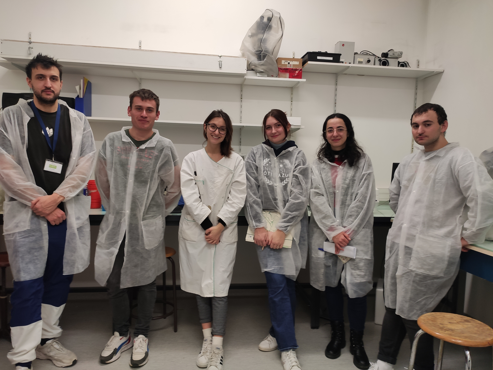
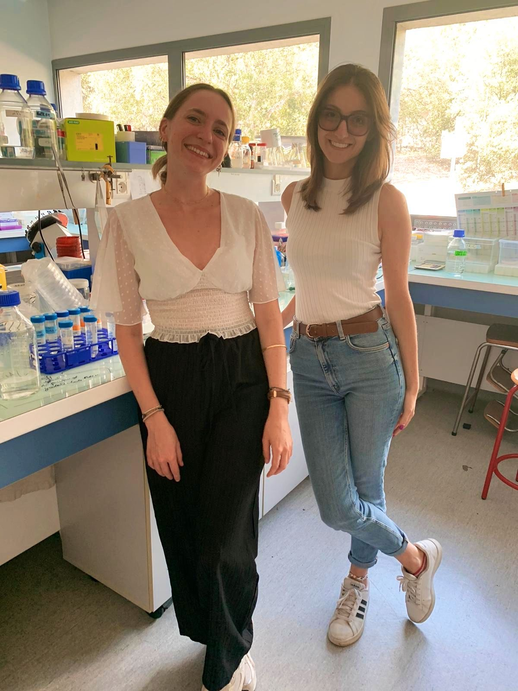

Master's thesis supervision
Supervisor · University Côte d'Azur, Nice, France · 2024
Project overview
Six-month supervision of a Master's student on a proteomics project, with the dual goal of developing both wet-lab competencies and data analysis skills. The project focused on characterising protein expression profiles using gel-based and immunodetection approaches, embedded in a broader workflow of experimental design and scientific reasoning.
Beyond guiding the student through the theoretical framework of proteomics, supervision included hands-on mentoring at the bench. The student followed the complete experimental workflow: from sample preparation and protein quantification, through SDS-PAGE and membrane transfer, to antibody incubation, signal detection, and critical discussion of results. Each step was treated as an opportunity to build both technical confidence and an integrated understanding of how experimental choices shape the data obtained.
Regular one-to-one meetings structured the progression of the thesis, connecting wet-lab observations to the broader scientific questions motivating the project and preparing the student for independent research.
Key techniques covered
- Protein extraction and sample preparation
- Protein quantification assays
- SDS-PAGE (gel electrophoresis)
- Western blot — membrane transfer, antibody incubation, signal detection
- Proteomics data analysis and results interpretation
- Scientific writing and thesis preparation
In the lab

